3D constant-density acoustic frequency-domain modeling: Testing Helmholtz derivative
In this test we certify that the function helmholtz_3d_derivative in fact computes the numerical derivative of the function helmholtz_3d. Notice that this is crucial for computing the action of the Jacobian (without explicitly forming the Jacobian).
Author: Rafael Lago
Contents
Theory
From Taylor's theorem we know that
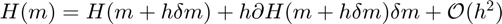
That means that the second order perturbation
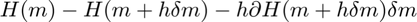 (1)
should be of the same order of magnitude as 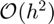 for any model 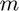 and a small enough perturbation 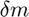 . If the model is given in slowness squared rather than meters per second, the second derivative should be zero and thus the first order approximation should be exact up to machine precision. In this test we concern the meters per second unit only, but with little modification, this script also shows that helmholtz_3d_derivative also represents the derivative of helmholtz_3d when using slowness squared.
In this test, we will consider the simple 3D Camembert velocity model as and a random perturbation . Instead of measuring 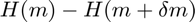 however, we will sample it with a vector 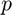 , as well chosen at random, and the test we effectively perform is
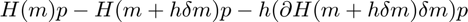 (2)
for varying values of 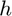 , from 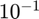 to 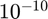 . We also impose that 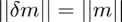 where 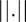 denotes the Euclidean norm of the vectorized model .
Computational details
The actual derivative of helmholtz_3d should be a tensor of dimension 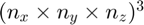 and therefore the storage of such a structure is considerably expensive. However, it is possible to compute and store the tensor dH/dm using band-storage format. The total storage cost for the tensor 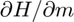 computed by helmholtz_3d_derivative is exactly the same as that of the matrix H, computed using helmholtz_3d.
We refer to the technical report [1] for more details on how to implement the tensor and the tensor-vector product using the band-storage format.
Remark: This is specifically the tensor for the 27 points stencil. The implementation of the tensor for the simpler 7 points stencil will be provided in a future release.
Test case
For this test we use the simple 3D camembert model. It consists of a homogeneous model with a high velocity ellipsoid in the center. The following figure shows a slice of the model.
clear flog = fopen(['../results/test_helmholtz_derivative_log'],'w'); % Read velocity model (and plot a slice) %-------------------------------------------------------------------- vfile = [ '../data/m_true.rsf' ]; [model.v model.nv model.dv model.ov] = rsf_read_all(vfile); model.unit = 'm/s'; plot_slice(model.v,11,'z');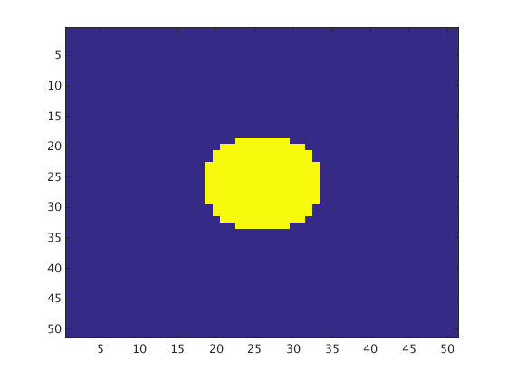
Script
Follows the test script. It prints some details of the velocity model being used and the progress of the numerical test for each value of h.
% Obtains a stable computational grid % (does not discretize yet) %-------------------------------------------------------------------- opts.discretize=false; cg = discrete_helmholtz(model,6,opts,flog); N = prod(cg.nt); % Choose the random perturbation dm and a random vector p %--------------------------------------------------------- h = 10.^([-1:-1:-10]); rng(123456); dm = randn(model.nv); dm =(dm/norm(dm(:))) *norm(model.v(:)); m = cg.pg2cg(model.v); dm = cg.pg2cg(dm); p = randn(N,1); % Discretize for H(m) %--------------------- [H0,idx] = helmholtz_3d(m,cg.d,cg.pml,cg.f,model.unit); H0p = Hmvp(H0,idx,p); plog(flog,'Testing the partial derivative of the Helmholtz operator w.r.t. m\n'); % Loop over h %------------- for i=1:length(h) [H, idx] = helmholtz_3d(m + h(i)*dm,cg.d,cg.pml,cg.f,model.unit); Hp = Hmvp(H,idx,p); [dH, ~ ] = helmholtz_3d_derivative(m + h(i)*dm,cg.d,cg.f,model.unit); dH = H2sparse(dH,idx); dmd = spdiags(dm(:),0,N,N); diff1(i) = norm(Hp - H0p); diff2(i) = norm(Hp - H0p - h(i)*(dH*dmd)*p); plog(flog,'Order of perturbation - ||h*dm||: ',h(i),'\n'); plog(flog,'First order error - ||H(m) - H(m+h*dm)||: ',diff1(i),'\n'); plog(flog,'Second order correction - ||h*dH(m+h*dm)*dm||: ',norm(h(i)*(dH*dmd)*p),'\n'); plog(flog,'Second order error - ||H(m) - H(m+h*dm) - h*dH(m+h*dm)*dm||: ',diff2(i),'\n\n'); end
* Physical domain: * ================== * vmin: 3.6e+03 * vmax: 4.5e+03 * Size: [5e+03 5e+03 2e+03] m³ * [ 51 51 21 ] points with grid spacing of [100 100 100] * Computational grid * ================== * n: [ 51 51 21 ] = 5.46e+04 * npml: [ 8 8 8 ], Total: 1.66e+05 * d: [ 100 100 100 ] * f: 6 Hz * nlam: 6 (effective: 6) Testing the partial derivative of the Helmholtz operator w.r.t. m Order of perturbation - ||h*dm||: 0.1 First order error - ||H(m) - H(m+h*dm)||: 0.00522 Second order correction - ||h*dH(m+h*dm)*dm||: 0.00636 Second order error - ||H(m) - H(m+h*dm) - h*dH(m+h*dm)*dm||: 0.00174 Order of perturbation - ||h*dm||: 0.01 First order error - ||H(m) - H(m+h*dm)||: 0.000478 Second order correction - ||h*dH(m+h*dm)*dm||: 0.000479 Second order error - ||H(m) - H(m+h*dm) - h*dH(m+h*dm)*dm||: 1.23e-05 Order of perturbation - ||h*dm||: 0.001 First order error - ||H(m) - H(m+h*dm)||: 4.78e-05 Second order correction - ||h*dH(m+h*dm)*dm||: 4.78e-05 Second order error - ||H(m) - H(m+h*dm) - h*dH(m+h*dm)*dm||: 1.23e-07 Order of perturbation - ||h*dm||: 0.0001 First order error - ||H(m) - H(m+h*dm)||: 4.78e-06 Second order correction - ||h*dH(m+h*dm)*dm||: 4.78e-06 Second order error - ||H(m) - H(m+h*dm) - h*dH(m+h*dm)*dm||: 1.23e-09 Order of perturbation - ||h*dm||: 1e-05 First order error - ||H(m) - H(m+h*dm)||: 4.78e-07 Second order correction - ||h*dH(m+h*dm)*dm||: 4.78e-07 Second order error - ||H(m) - H(m+h*dm) - h*dH(m+h*dm)*dm||: 1.23e-11 Order of perturbation - ||h*dm||: 1e-06 First order error - ||H(m) - H(m+h*dm)||: 4.78e-08 Second order correction - ||h*dH(m+h*dm)*dm||: 4.78e-08 Second order error - ||H(m) - H(m+h*dm) - h*dH(m+h*dm)*dm||: 1.23e-13 Order of perturbation - ||h*dm||: 1e-07 First order error - ||H(m) - H(m+h*dm)||: 4.78e-09 Second order correction - ||h*dH(m+h*dm)*dm||: 4.78e-09 Second order error - ||H(m) - H(m+h*dm) - h*dH(m+h*dm)*dm||: 1.23e-15 Order of perturbation - ||h*dm||: 1e-08 First order error - ||H(m) - H(m+h*dm)||: 4.78e-10 Second order correction - ||h*dH(m+h*dm)*dm||: 4.78e-10 Second order error - ||H(m) - H(m+h*dm) - h*dH(m+h*dm)*dm||: 3.56e-17 Order of perturbation - ||h*dm||: 1e-09 First order error - ||H(m) - H(m+h*dm)||: 4.78e-11 Second order correction - ||h*dH(m+h*dm)*dm||: 4.78e-11 Second order error - ||H(m) - H(m+h*dm) - h*dH(m+h*dm)*dm||: 3.26e-17 Order of perturbation - ||h*dm||: 1e-10 First order error - ||H(m) - H(m+h*dm)||: 4.78e-12 Second order correction - ||h*dH(m+h*dm)*dm||: 4.78e-12 Second order error - ||H(m) - H(m+h*dm) - h*dH(m+h*dm)*dm||: 3.08e-17
Results
As previously mentioned, we expect the second order error (1) to behave like 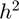 . The following plot clearly shows that the as h decreases, the second order approximation follows the same behaviour (i.e. the lines are parallel) until reaching machine precision, which is 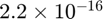 . Notice that any further computation is not actually meaningful, and we observe that the second order error turns into a flat line after that point. This behaviour is expected.
Likewise, we show the first order error as well. As expected, it behaves like (i.e. the lines are parallel).
figure; loglog(h,diff1,h,h,'k--'); xlabel('h');ylabel('error'); hold on; loglog(h,h.^2,'g--'); hold on; loglog(h,diff2,'r'); xlim([h(end) h(1)]); legend('First order error','h','h^2','Second order error','Location','NorthWest'); fclose(flog);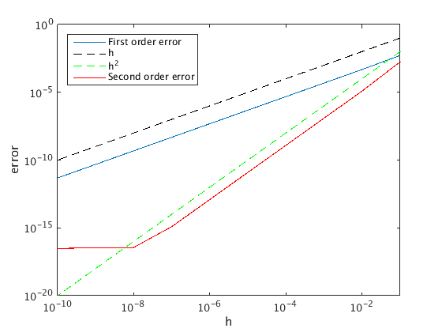
References
[1] Lago, R. 2014 - Efficient computation of dH/dm tensor for a 27-points stencil with mass lumping